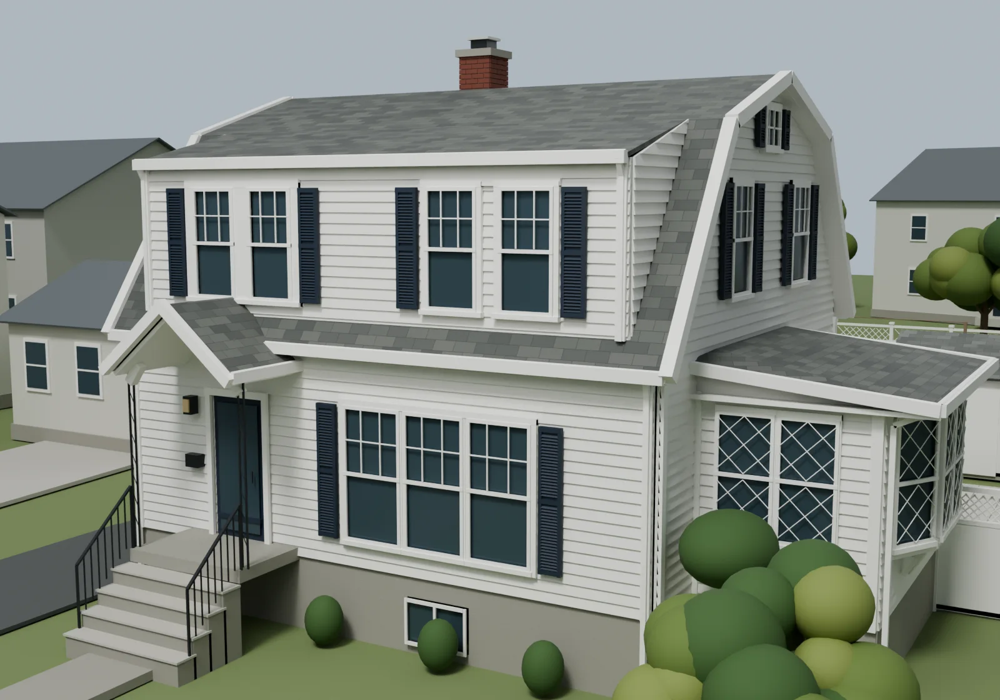
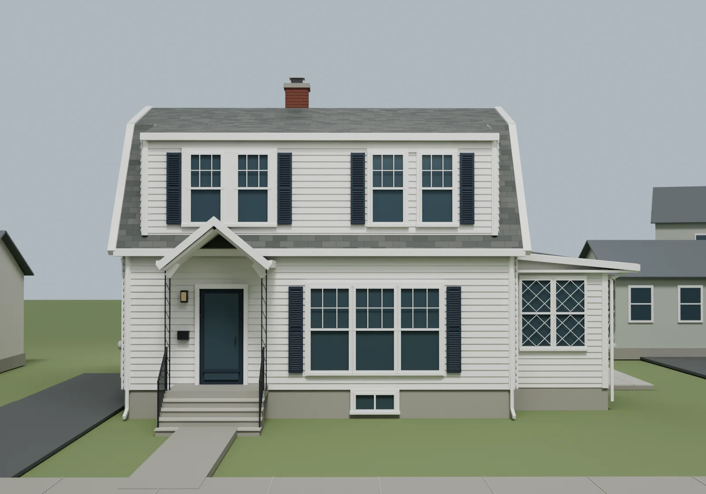
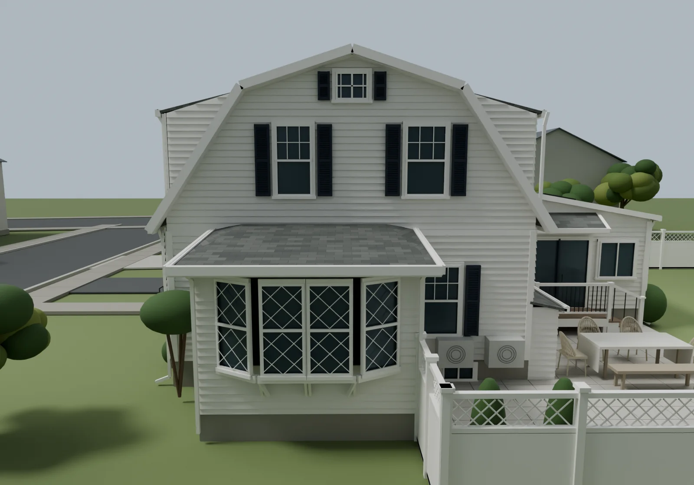
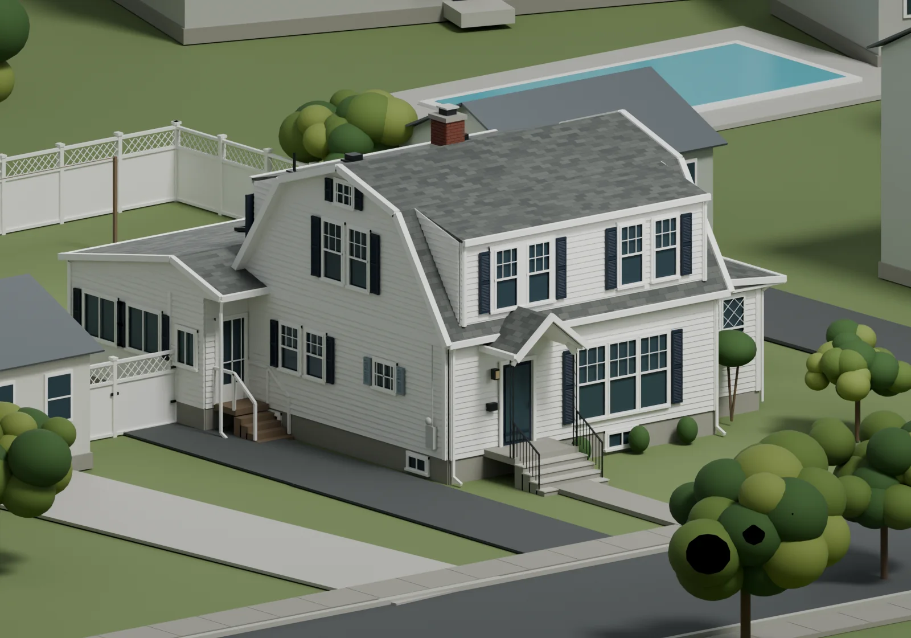
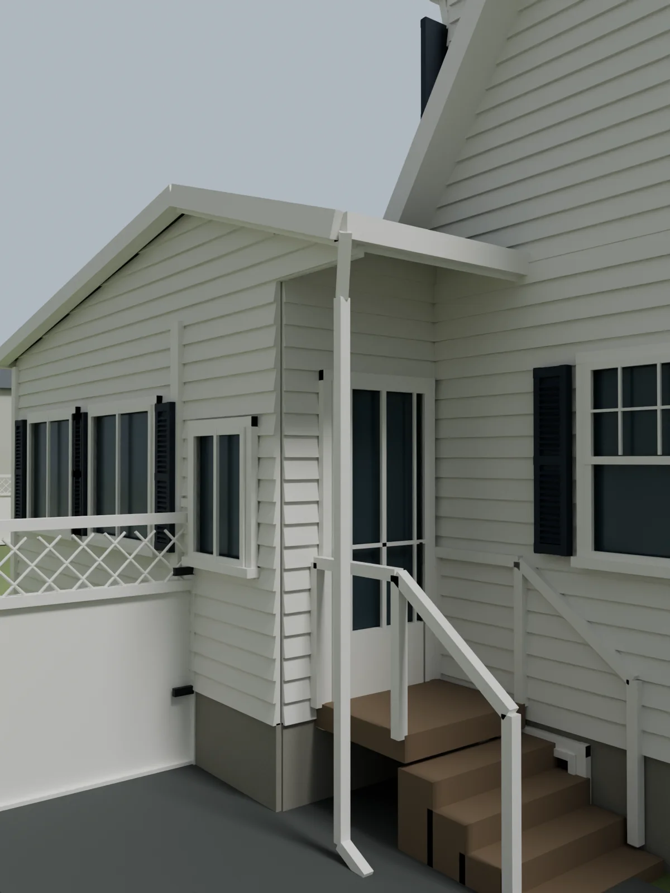
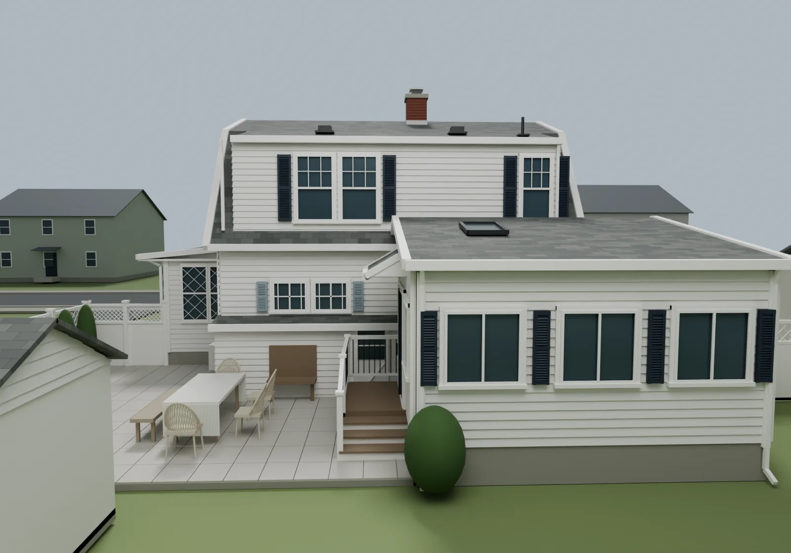
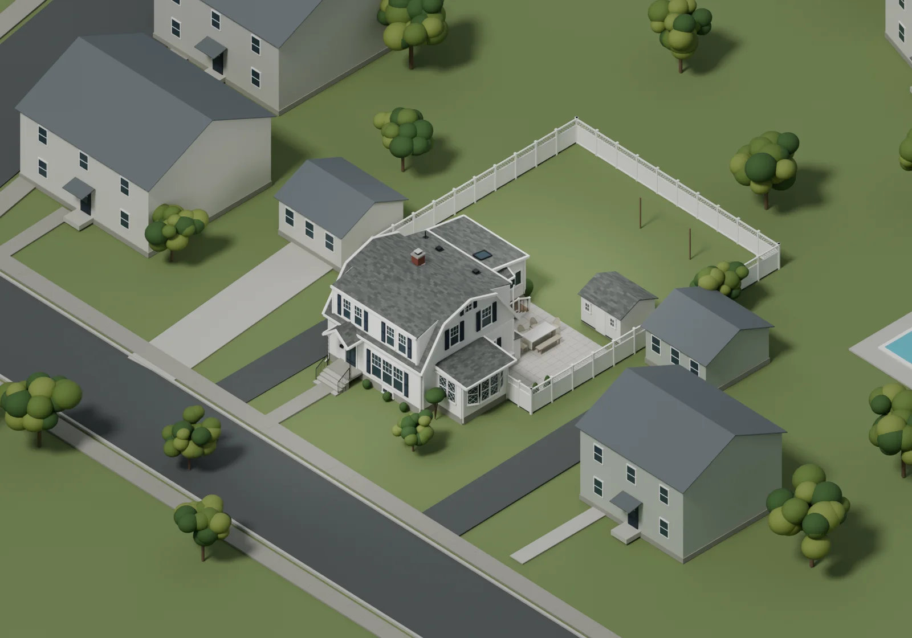
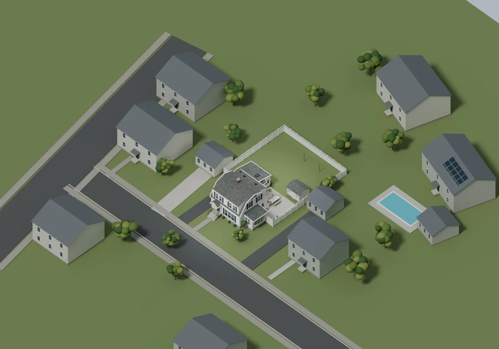
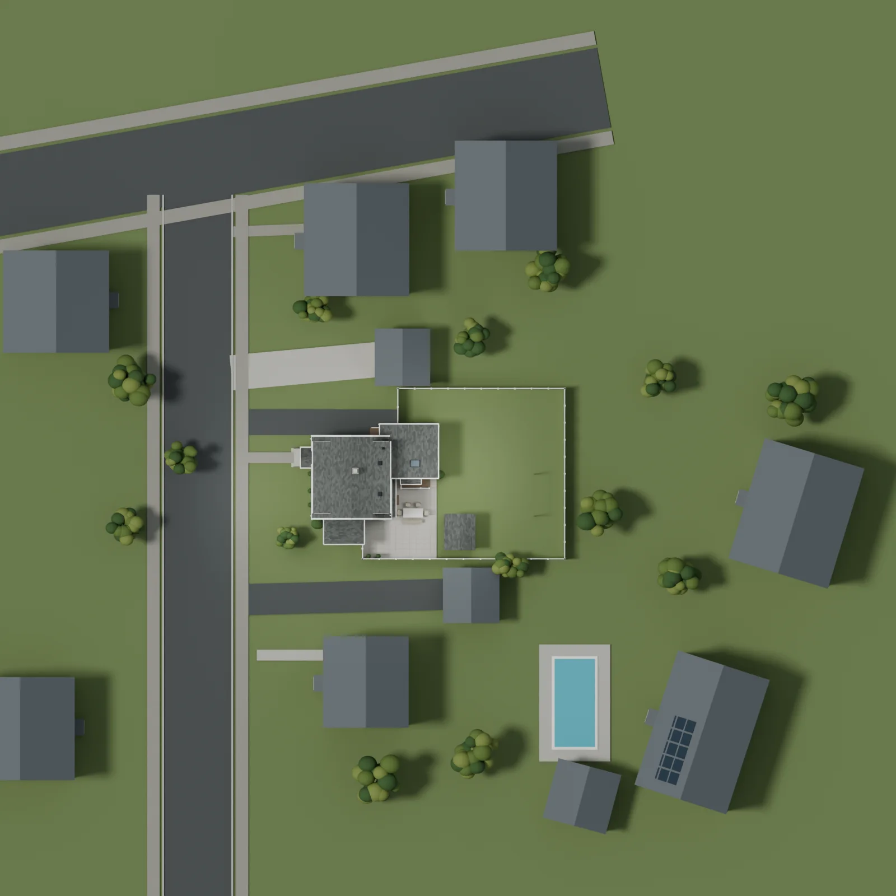

Exterior & site
Drag to orbit · scroll or pinch to zoom · right-drag to pan
Model notes & downloads
The gambrel roof, dormers, office bay, rear sunroom, patio, driveway and surrounding site.
This is a photo-based exterior and approximate site study. Measured interior rooms constrain parts of the shell; roof heights, pitches, yard distances and neighboring buildings remain estimates. The sunroom footprint follows the October 8 room and alcove measurements. Basement window heights share the unfinished-basement reference and sit just above the estimated driveway. The rear sunroom glazing follows the exterior photographs and differs from the earlier interior estimate.
Related: Main floor
Rendered views & plans

















